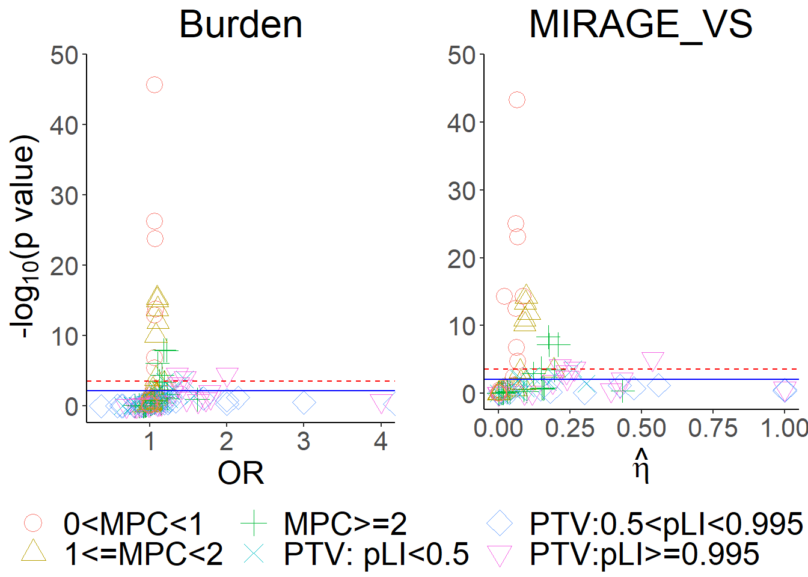
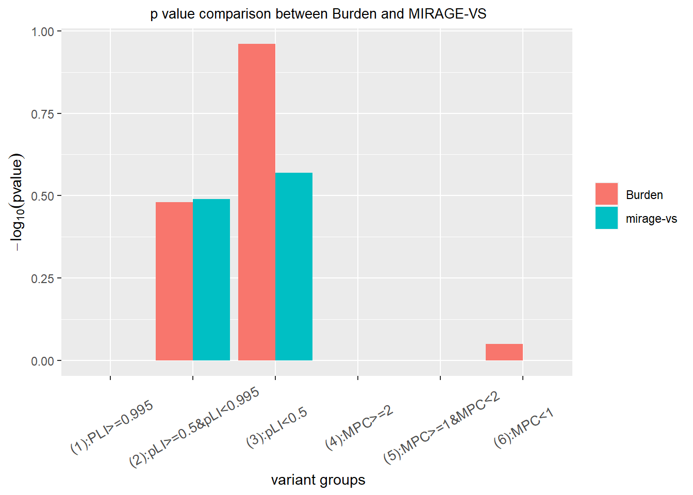

ASC new sample gene set analysis
Variant count in PTV with PLI>=0.995 at different AF
cutoffs
| AF cutoff | Trans | Untrans |
|---|---|---|
| <0.000001 | 659 | 655 |
| <0.00001 | 779 | 805 |
| <0.0001 | 876 | 966 |
| <0.001 | 1164 | 1413 |
When AF <0.1%, there are 1164 transmitted variants and 1413 untransmitted, not consistent with numbers in cell paper 695 vs 557.
pLI>=0.995isPTV==TisIndel=="FALSE"Gnomad_non_neuro_AF<AF_cutoffnum_alleles<5
| filter | Trans | Untrans |
|---|---|---|
| VQSLOD<3.75 | 255 | 546 |
| VQSLOD<5.13 | 300 | 624 |
| VQSLOD<9 | 1151 | 1415 |
| QD >= 1 & AS_SOR <= 3 & AS_ReadPosRankSum >= -0.8 | 818 | 785 |
| QD >= 6 & AS_SOR <= 3 & AS_ReadPosRankSum >= -0.8 | 816 | 726 |
| QD >= 10 & AS_SOR <= 3 & AS_ReadPosRankSum >= -0.8 | 738 | 604 |
| QD >= 10.5 & AS_SOR <= 3 & AS_ReadPosRankSum >= -0.8 | 714 | 567 |
| QD >= 11 & AS_SOR <= 3 & AS_ReadPosRankSum >= -0.8 | 678 | 526 |
| QD >= 1 & AS_SOR <= 3 & AS_ReadPosRankSum >= -2 | 956 | 946 |
| QD >= 1 & AS_SOR <= 5 & AS_ReadPosRankSum >= -0.8 | 821 | 804 |
| QD >= 1 & AS_SOR <= 10 & AS_ReadPosRankSum >= -0.8 | 822 | 861 |
- Kyle suggested: QD >= 1 & AS_SOR <= 3 & AS_ReadPosRankSum >= -0.8
- with filter
QD >= 6 & AS_SOR <= 3 & AS_ReadPosRankSum >= -0.8, 0.11 transmitted (816/7291) vs 0.10 untransmitted vps - cutoff for
AS_ReadPosRankSumcould decrease to, for instance -2, or even lower, while maintaining balanced T/UT, but the OR consistently stay around 1.01, a bit away from 1.2 - OR will increase with increasing cutoff for
QD. When cutoff =10.5, both OR and variant counts are close to numbers in paper, but when cutoff >10.5, the variant count will become smaller than than in paper, seems not appropriate.
- With balanced T/UT, increase of cutoff for
AS_SORwill decrease OR, even below 1, becoming depleted
pLI>=0.995isPTV==TisIndel=="FALSE"Gnomad_non_neuro_AF<0.001
plot of QD value

## Min. 1st Qu. Median Mean 3rd Qu. Max.
## 0.323 11.270 12.480 12.418 13.580 46.520use filters
isIndel=="FALSE"AS_SOR <= 3AS_ReadPosRankSum >= -0.8
Run mirage-vs on 6 variant groups in cell paper
- Use mirage-vs to test if there are signals in six variant
groups
- filter
Gnomad_non_neuro_AF<0.05was applied isIndel=="FALSE" & QD >= 10 & AS_SOR <= 3 & AS_ReadPosRankSum >= -0.8isSyn=="FALSE"
This figure shows the comparison between burden test (one side two sample poisson test) and mirage-vs for proband in 6 variant groups. \(\gamma=6\) for 3 PLI variant groups and \(\gamma=3\) for another 3 MPC groups when running mirage_vs.
## # A tibble: 6 x 7
## X No_case No_contr OR pval eta_est eta_pval
## <chr> <int> <int> <dbl> <dbl> <dbl> <dbl>
## 1 PLI>=0.995 1351 1220 1.11 5.17e- 3 0.130 1.62e- 3
## 2 pLI within (0.5,0.995) 2939 2764 1.06 1.06e- 2 0.0643 2.11e- 2
## 3 pLI<0.5 109275 108331 1.01 2.16e- 2 0.00390 8.92e- 1
## 4 MPC>=2 48429 47071 1.03 5.64e- 6 0.0345 2.72e- 3
## 5 MPC within (1,2) 325625 319079 1.02 1.80e-16 0.0101 1.72e-11
## 6 MPC<1 4768875 4745827 1.00 3.96e-14 0.00131 2.49e-28
Run MIRAGE-VS on 180 variant sets

exclude syn variants
isSyn=="FALSE"6 variant groups X 3 AF categories (0.001<AF<0.01, 0.0001<AF<0.001, AF<0.0001) X 10 gene sets=180 variant groups
use filter
isIndel=="FALSE" & QD >= 10 & AS_SOR <= 3 & AS_ReadPosRankSum >= -0.8solid blue line is FDR 0.05 and dashed red line is Bonferroni correction p = 0.05/total number of tests.

- one outlier with extremely small MIRAGE_Vs p value is gene set
AutismKB_MPC<1_0.0001<AF<0.001with 6802 (transmitted) vs 6914 (untransmitted) on 1901 loci. Burden p value: 0.9839; MIRAGE_VS p value: 5.195326e-15.

variant set
ID gene_PLI>=0.995_0.001<AF<0.01, two loci, 13 (Trans) vs 15 (Nontrans) and 21 vs 8=> 34 vs 23 in total.varying \(\bar{\gamma}\) produces quite different p values for MIRAGE_VS.
blue dashed line: burden test p value of 0.09242524
Run MIRAGE genomewide
Run mirage on all 17850 genes and \(\gamma=6\) for 3 PLI variant groups and \(\gamma=3\) for 3 MPC groups.
AF<0.05,
Gnomad_non_neuro_AF<0.05isSyn=="FALSE"isIndel=="FALSE" & QD >= 10 & AS_SOR <= 3 & AS_ReadPosRankSum >= -0.8
| variant category | parameter | estimate | p value |
|---|---|---|---|
| \ | \(\hat{\delta}\) | 0.0677 | \(1.383766e-42\) |
| (1):PLI>=0.995 | \(\hat{\eta}_1\) | 0.8341 | \(1.887287e-02\) |
| (2):0.5<=pLI<0.995 | \(\hat{\eta}_2\) | 0.8510 | \(1.236803e-02\) |
| (3):pLI<0.5 | \(\hat{\eta}_3\) | 0.0292 | \(6.837139e-01\) |
| (4):MPC>=2 | \(\hat{\eta}_4\) | 0.4683 | \(1.576707e-03\) |
| (5):1<=MPC<2 | \(\hat{\eta}_5\) | 0.1136 | \(1.401804e-12\) |
| (6):0<=MPC<1 | \(\hat{\eta}_6\) | 0.0120 | \(1.471682e-32\) |

Below are top ranked genes.
## # A tibble: 17,849 x 4
## X Gene BF post.prob
## <int> <chr> <dbl> <dbl>
## 1 10093 HLA-DRB1 2.13e15 1.00
## 2 7049 SSC5D 5.48e12 1.00
## 3 13643 GSTM1 3.10e11 1.00
## 4 6420 TXNDC2 5.32e 6 1.00
## 5 7169 PRAM1 1.81e 3 0.992
## 6 6234 ENPP7 2.86e 1 0.675
## 7 828 PTEN 1.47e 1 0.516
## 8 315 SUPT5H 1.42e 1 0.507
## 9 408 MICAL3 1.38e 1 0.500
## 10 5778 DPH1 1.32e 1 0.489
## # ... with 17,839 more rows102 ASD genes in cell paper
variant set (VS) analysis by MIRAGE_VS
This figure shows the comparison between burden test (one side two sample poisson test) and mirage-vs for proband in 6 variant groups. \(\gamma=6\) for 3 PLI variant groups and \(\gamma=3\) for 3 MPC groups when running mirage_vs.
## # A tibble: 6 x 7
## X No_case No_contr OR pval eta_est eta_pval
## <chr> <int> <int> <dbl> <dbl> <dbl> <dbl>
## 1 PLI>=0.995 31 20 1.55 0.0804 0.227 0.342
## 2 pLI>=0.5&pLI<0.995 12 1 12 0.00171 1.00 0.00135
## 3 pLI<0.5 18 11 1.64 0.132 0.299 0.294
## 4 MPC>=2 607 546 1.11 0.0386 0.0681 0.222
## 5 MPC>=1&MPC<2 4740 4685 1.01 0.289 0.0335 0.0797
## 6 MPC<1 28977 28532 1.02 0.0321 0.000207 1
gene set analysis by MIRAGE
\(\gamma=6\) for LoF variant and \(\gamma=3\) for missense when running mirage.
filter
Gnomad_non_neuro_AF<0.05isSyn=="FALSE"isIndel=="FALSE" & QD >= 10 & AS_SOR <= 3 & AS_ReadPosRankSum >= -0.8
| variant category | parameter | estimate | p value |
|---|---|---|---|
| \ | \(\hat{\delta}\) | 0.9998 | \(0.0295\) |
| PLI>=0.995 | \(\hat{\eta}_1\) | 0.4321 | \(0.2334\) |
| 0.5<=pLI<0.995 | \(\hat{\eta}_2\) | 1 | 0.0056 |
| pLI<0.5 | \(\hat{\eta}_3\) | 0.5156 | 0.2508 |
| MPC>=2 | \(\hat{\eta}_4\) | 0.1176 | 0.1685 |
| 1<=MPC<2 | \(\hat{\eta}_5\) | 0.0539 | 0.0729 |
| 0<=MPC<1 | \(\hat{\eta}_6\) | \(7.814873e-09\) | 1 |

Top 5% constraint genes
Use below filters and stated otherwise
filter
Gnomad_non_neuro_AF<0.05isSyn=="FALSE"isIndel=="FALSE" & QD >= 10 & AS_SOR <= 3 & AS_ReadPosRankSum >= -0.8
Burden analysis for variants in constrant genes with AF<10E-4
In old sample, we observe signal in constraint genes with \(AF<10^{-4}\).
in new sample, there are 99333 transmitted variants and 94575 untransmitted variants.

Run MIRAGE_VS on all variants in constraint genes with AF<10E-4 in one group
Put all variants with AF<10E-4 in one category and run MIRAGE_VS. \(\widehat{\eta}=0.0882\), p value is \(2.585515e-34\).
Burden p value vs MIRAGE_VS p value

Run MIRAGE_VS on 6 variant groups in cell paper
This figure shows the comparison between burden test (one side two sample poisson test) and mirage-vs for proband in 6 variant groups.
- \(\gamma=6\) for 3 PLI variant groups and \(\gamma=3\) for 3 MPC groups when running mirage.
## # A tibble: 6 x 7
## X No_case No_contr OR pval eta_est eta_pval
## <chr> <int> <int> <dbl> <dbl> <dbl> <dbl>
## 1 (1):PLI>=0.995 225 178 1.26 0.0109 0.200 0.0150
## 2 (2):pLI>=0.5&pLI<0.995 174 182 0.956 0.683 0.000342 1
## 3 (3):pLI<0.5 854 775 1.10 0.0266 0.212 0.00105
## 4 (4):MPC>=2 7968 7638 1.04 0.00422 0.0730 0.0000137
## 5 (5):MPC>=1&MPC<2 48412 47060 1.03 0.00000614 0.00926 0.0918
## 6 (6):MPC<1 146671 145348 1.01 0.00721 0.000871 1
gene set analysis by MIRAGE
\(\gamma=6\) for PLI variant groups and \(\gamma=3\) for MPC groups when running mirage.
836 genes in total
| variant category | parameter | estimate | p value |
|---|---|---|---|
| \ | \(\hat{\delta}\) | 0.9832 | \(2.014043e-06\) |
| (1):PLI>=0.995 | \(\hat{\eta}_1\) | 0.2036 | 0.0150 |
| (2):0.5<=pLI<0.995 | \(\hat{\eta}_2\) | \(1.118248e-35\) | 1 |
| (3):pLI<0.5 | \(\hat{\eta}_3\) | 0.2145 | 0.0011$ |
| (4):MPC>=2 | \(\hat{\eta}_4\) | 0.1115 | 0.0000152777 |
| (5):1<=MPC<2 | \(\hat{\eta}_5\) | 0.0175 | 0.0559135877 |
| (6):0<=MPC<1 | \(\hat{\eta}_6\) | 2.259378e-06 | 1 |

Top 10 genes with burden
- top genes with large BF don’t have heavy burden.
## # A tibble: 10 x 5
## Gene BF Transmitted_proband Untransmitted_proband OR
## <chr> <dbl> <dbl> <dbl> <dbl>
## 1 LPA 6.23 12960 13000 0.997
## 2 KIAA1109 3.76 3805 3710 1.03
## 3 DNM2 2.91 167 142 1.18
## 4 EIF3I 2.87 18 13 1.38
## 5 ACACA 2.73 440 424 1.04
## 6 NRXN2 2.71 993 1057 0.939
## 7 CTNNA2 2.45 152 130 1.17
## 8 ZMIZ1 2.11 1638 1695 0.966
## 9 SUPT5H 2.09 294 288 1.02
## 10 F12 2.09 156 169 0.923Vairants driving the signal in top gene
This R Markdown site was created with workflowr